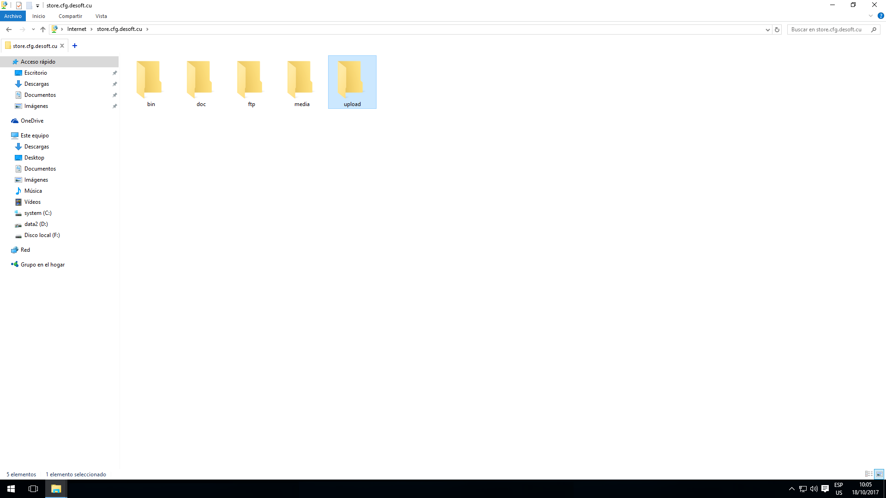
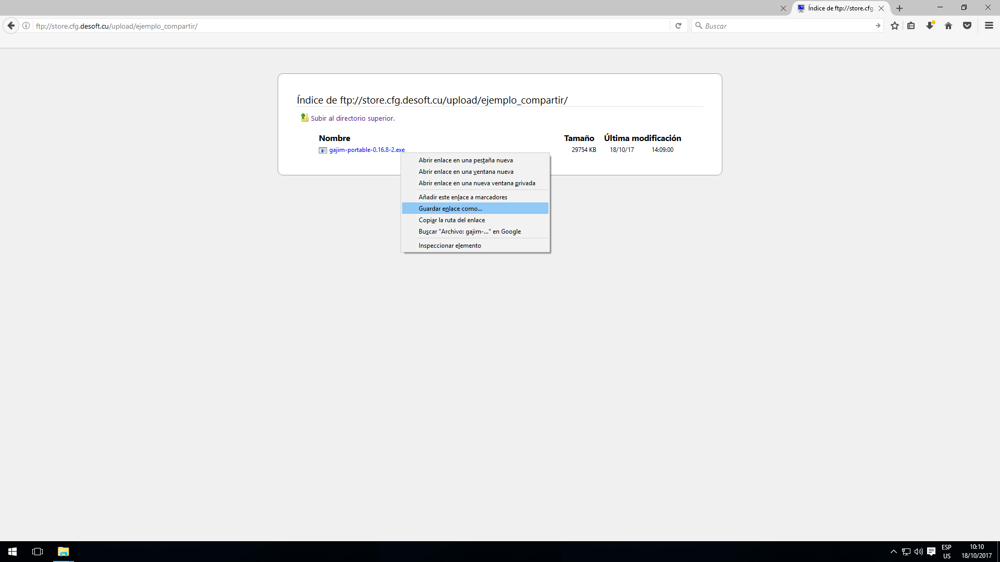

-

Este tutorial les describe paso a paso Como compartir información a través del almacén de la nube con mis compañeros de trabajo.
Tengan presente que la información deben borrarla cuando no les sea útil, para evitar sobrecargar el servidor con información redundante e innecesaria. En caso que se requiera que la información perdure en el tiempo, debemos contactar con el administrador.
1. Para proceder debemos hacer es abrir un explorador de archivos de Windows o una herramienta como el Filezilla. En este caso utilizaremos el explorador nativo de Windows.
2. Escribir en la barra de direcciones la URL del servidor de almacenamiento en la Nube quedando de la siguiente forma ftp://store.cfg.desoft.cu
-

Accedemos al servidor y este nos muestra un listado de directorios a los cuales tenemos acceso.
El directorio denominado [upload] es el establecido para que subamos nuestra información.
-

Una vez dentro del directorio upload procedemos a crearnos una carpeta que contendrá la información a compartir, esto no es obligatorio sino una política de organización.
-

Aquí podemos observar la carpeta creada y procedemos a entrar en nuestro directorio para copiar todo tipo de información a compartir.
-

Sobre nuestro directorio copiamos la información deseada, la eliminamos, editamos, etc.
-

-

Una vez compartida nuestra información notificamos a los interesados y estos pueden acceder a través de un explorador de archivos de Windows como lo hicimos o a través de Filezilla, o simplemente un navegador web como se muestra en esta pantalla.